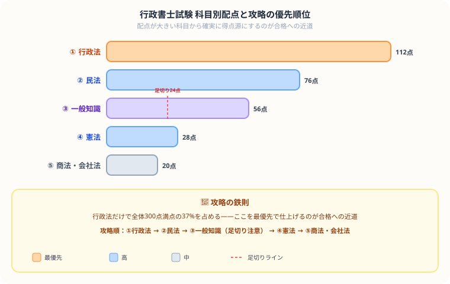

行政書士の独学勉強法・合格スケジュール【2026年版】
こんにちは、大谷です！
「法律の基礎を身につけよう！」と行政書士のテキストを開いた瞬間……「うわっ、なんじゃこりゃ……行政手続法だの不服審査法だの、漢字だらけの条文が多すぎて頭爆発するわ！11月の試験に本当に間に合うの！？」とフリーズしていませんか？（お気持ち、めちゃくちゃ分かります笑）。
僕は公認会計士を目指して毎日法律（企業法など）や会計と格闘していますが、行政書士で出題される行政法や記述式は、コツさえ掴めば得点を量産できる最高の脳トレパズルに化けます。
今回は、僕が難関資格の学習で培った逆算の視点をベースに、112点分出題される「行政法」を最速で陥落させ、40字記述式の罠をすり抜けて独学で11月試験を完全撃破する「無敵の攻略ルート」を優しくナビゲートします。
また、モチベ維持のために、記事の末尾のほうにある【いいねボタン】をポチッと押してもらえると、めちゃくちゃ嬉しいです！
行政書士試験の基本情報
| 項目 | 内容 |
|---|---|
| 試験日 | 毎年11月第2日曜日（2026年は11月8日予定） |
| 合格率 | 10〜15% |
| 合格基準 | 法令科目122点以上・一般知識24点以上・総合180点以上（300点満点） |
| 必要勉強時間 | 独学：500〜800時間 |
| 試験科目 | 法令科目（憲法・行政法・民法・商法等）・一般知識 |
科目別の配点と優先度

| 科目 | 配点 | 難易度 | 優先度 |
|---|---|---|---|
| 行政法 | 112点 | ★★★ | 最優先 |
| 民法 | 76点 | ★★★ | 高 |
| 憲法 | 28点 | ★★☆ | 高 |
| 商法・会社法 | 20点 | ★★★ | 中 |
| 一般知識 | 56点 | ★★☆ | 高（足切りあり） |
月別学習スケジュール（今から始める場合）
| 時期 | 学習内容 | 1日の目安 |
|---|---|---|
| 5〜6月 | 憲法・行政法テキスト精読 | 2時間 |
| 7月 | 民法テキスト精読 | 2時間 |
| 8月 | 商法・一般知識テキスト精読 | 2時間 |
| 9月 | 全科目問題集演習・弱点補強 | 2〜3時間 |
| 10月 | 過去問10年分を繰り返す | 3時間 |
| 11月前半 | 直前総復習・模擬試験 | 3時間 |
科目別攻略法
行政法（最優先）
行政手続法・行政不服申立法・行政事件訴訟法・国家賠償法・地方自治法が主要テーマです。条文の暗記と判例理解の両立が必要です。特に行政手続法は条文をそのまま問う問題が多いため、条文を繰り返し読み込むことが有効です。
民法（第2優先）
総則・物権・債権・親族・相続が範囲です。2020年の民法改正内容が出題されます。特に契約の成立・効力・解除、担保物権（抵当権）、相続の基本ルールを重点的に学習しましょう。
一般知識（足切りに注意）
政治・経済・社会・情報通信・個人情報保護法などが出ます。6問以上（24点以上）取れないと足切りになります。個人情報保護法・情報通信分野は出題パターンが決まっているので確実に得点しましょう。
行政法の頻出判例・条文リスト
| 論点 | 頻出内容 | 要チェック |
|---|---|---|
| 行政手続法・申請に対する処分 | 審査基準の設定義務・標準処理期間・理由の提示 | 条文をほぼそのまま出題 |
| 行政手続法・不利益処分 | 聴聞・弁明の機会の付与の区別・処分基準 | どちらの手続きか問う問題多数 |
| 行政不服申立法 | 審査請求・再調査の請求・再審査請求の区別 | 期間（3ヶ月・1年）の数字 |
| 行政事件訴訟法 | 取消訴訟の原告適格・出訴期間・執行不停止原則 | 処分取消訴訟と裁決取消訴訟の違い |
| 国家賠償法 | 1条（公権力の行使）・2条（営造物の瑕疵） | 要件・効果を正確に |
| 地方自治法 | 直接請求（署名数・請求先・効果） | 条例制定1/50・監査1/50・解散1/3 |
記述式問題の攻略法
行政書士試験の記述式問題（3問・各20点＝60点）は合否を大きく左右します。多くの受験生が苦手とする記述式の攻略ポイントを解説します。
配点60点分を占める40字記述式は、丸暗記では1点ももらえません。攻略のコツは、問題文を読んだ瞬間に【①誰が（原告）】【②誰に対して（被告）】【③どのような請求や判決を求めるか】という3つの独立した「パーツ」を抜き出し、パズルのように合体させて40字のハコに収めることです。このドッキングの型さえ覚えれば、採点官が用意しているキーワードを確実に網羅でき、部分点を大量にもぎ取れるようになりますよ！
- 択一問題で理解してから記述に入る：記述式は択一問題の発展版です。選択肢で問われる論点を深く理解していれば、自然と記述できるようになります。
- 「〜は…である」という断定形で書く：曖昧な表現は減点対象です。法律的な用語を正確に使い、結論を明確に書きましょう。
- キーワードを意識する：採点はキーワードの有無で行われます。問題文の聞いていることを分析し、論点のキーワード（「信義則」「正当の利益」など）を必ず含めましょう。
- 字数制限を守る：40字前後の指定がある場合、±5字以内に収めてください。短すぎても長すぎても減点になります。
独学 vs 通信講座比較
| 独学 | 通信講座（フォーサイト・アガルート等） | 予備校（TAC・LEC） | |
|---|---|---|---|
| 費用 | 3〜5万円 | 5〜15万円 | 20〜40万円 |
| 合格率 | 低い（情報収集が難しい） | やや高い（記述式の添削あり） | 高い |
| 向いている人 | 法律の基礎がある・再受験者 | 初学者・社会人 | 確実に1発合格したい |
行政書士は記述式問題（60点分）があるため、独学では採点基準が把握しにくく失点しやすいです。初学者には記述式添削のある通信講座がコスパ最良です。
よくある失敗パターン
- 民法に時間をかけすぎる：民法は76点と重要ですが、行政法（112点）が最優先。民法で完璧を目指すより行政法を固める方が合格に近づきます。
- 一般知識を軽視する：24点（6問以上）の足切りがあります。個人情報保護法・情報通信は確実に得点できる分野なので、直前期に必ず対策しましょう。
- 記述式の練習が不足する：択一問題だけの演習では記述式に対応できません。記述式は別途、過去問や予想問題で「自分の言葉で書く」練習が必要です。
おすすめテキスト
- みんなが欲しかった！行政書士の教科書（TAC出版）：フルカラーで読みやすい。初学者の定番。
- 合格革命 行政書士 基本テキスト（早稲田経営出版）：情報量が多く、直前期まで使える。
- 行政書士 肢別過去問集（TAC出版）：過去問演習の定番。科目別に分類されていて使いやすい。
まとめ
- 行政書士の独学に必要な勉強時間は500〜800時間
- 行政法（112点）を最優先に仕上げることが合格への王道
- 一般知識は足切りがあるため最低限の対策が必須
- 商法・会社法は深追いせず過去問対応のみでOK
- 今から始めれば11月試験まで十分な準備ができる
この記事が少しでも参考になったら……
法律の勉強は最初こそ漢字だらけの条文にフリーズしますが、行政法の頻出パターンや記述式のドッキングの型が見えてくると、一気にパズルを解くような面白さに変わります。
僕の執筆のモチベーション維持のために、この下にある【いいねボタン】をポチッと押してもらえると、めちゃくちゃ嬉しいです！ そして、Study Questで日々の学習時間を記録しながら、11月の本番まで一緒に駆け抜けましょう。